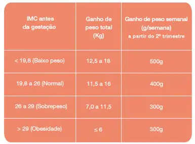

TRATAMENTOS E CUIDADOS
A gestação não é época para fazer dietas restritivas e nem perder peso. Por outro lado, também não significa comer em excesso, ou “comer por dois”.
O ganho de peso adequado no primeiro trimestre da gravidez é de 1,5 a 2,0Kg. A partir desta fase, é recomendado um ganho adicional de 1,5 a 2,0Kg por mês para chegar ao final da gravidez com 7,0 a 15,0Kg a mais, no máximo.
Uma forma simples de saber qual deve ser o seu ganho de peso é aplicar a fórmula do Índice de Massa Corporal (IMC) . O IMC leva em conta o peso antes da gravidez:
IMC= Peso habitual antes da gestação (kg) / Altura²(m)
Com base no valor do IMC calculado, veja na tabela a seguir o ganho de peso recomendado até o final da gravidez:

CONVIVENDO
Os nove meses de gestação exigem uma alimentação equilibrada, com todos os grupos alimentares, o que não significa comer exageradamente. Mas, em determinados períodos, o consumo de certos nutrientes deve ser reforçado.
Aquela velha história de que se deve comer por dois durante a gestação está ultrapassada. O segredo está na escolha dos nutrientes, que precisam ser consumidos adequadamente em cada fase da gravidez, para garantir a saúde do bebê e da futura mãe.
É nesse período, portanto, que a alimentação precisa ser selecionada e muito mais balanceada. É claro que nada substitui o acompanhamento médico e os exames que que devem ser feitos durante o pré-natal.
Confira os principais nutrientes a serem consumidos em todas as fases da gestação:
PRIMEIRO TRIMESTRE
Ácido fólico — ou vitamina B9, é o nutriente mais utilizado pelas grávidas e indicado pelos médicos. E não é à toa. Sua ingestão previne defeitos na formação do tubo neural do feto (estrutura que dará origem ao cérebro e à medula espinhal). Boa parte dos ginecologistas e obstetras recomenda que a mulher que deseja engravidar já comece a tomar a vitamina B9 pelo menos três meses antes da concepção e continue a sua ingestão no primeiro trimestre de gestação. Os médicos fazem esta recomendação porque níveis adequados de ácido fólico nem sempre são obtidos apenas por meio da alimentação.
SEGUNDO TRIMESTRE
Vitamina C — age na formação do colágeno, que compõe pele, vasos sanguíneos, ossos e cartilagem, aumenta a absorção do ferro e fortalece o sistema imunológico.
Magnésio — o mineral que favorece a formação e o crescimento dos tecidos do corpo.
Vitamina B6 — importante para o crescimento e o ganho de peso do feto e a prevenção da depressão pós-parto.
Ferro — é essencial na produção de hemoglobina, proteína responsável pelo transporte de oxigênio pelo sangue. Evita que a mãe ou o bebê tenham anemia.
TERCEIRO TRIMESTRE
Cálcio — por conta de seu papel na formação óssea do bebê, o mineral é obrigatório na dieta da futura mãe. Sua deficiência pode provocar cáries, cãibras e unhas quebradiças. O cálcio tem outra nobre função: a de auxiliar a produção de leite após o parto. Ele ajuda ainda no processo de coagulação do sangue e na manutenção da pressão sanguínea, dos batimentos cardíacos e das contrações musculares. Mas vale uma dica: evite consumir fontes de ferro e cálcio juntas, como carne e leite, pois um nutriente atrapalha a absorção do outro.
OS ESSENCIAIS
Durante os nove meses, além de uma dieta balanceada, os especialistas indicam nutrientes que não podem ficar de fora do cardápio diário para uma gravidez saudável:
CARBOIDRATOS – Fornecem energia para o organismo da mulher e o desenvolvimento do bebê. A gestante deve priorizar os carboidratos complexos, encontrados, por exemplo, nos pães e cereais integrais, que são absorvidos mais lentamente.
FÓSFORO – Participa, como o cálcio, da formação dos brotos dentários e do esqueleto fetal. Fontes: carnes magras e laticínios;
PROTEÍNAS – Responsáveis por construir, manter e renovar os tecidos da mãe e do bebê. Encontradas nas carnes, nos feijões, leite e derivados;
VITAMINA D – Aliada a banhos de sol periódicos, é essencial para a fixação do cálcio nos ossos. Encontrada no leite enriquecido, manteiga, ovos e fígado;
Lípides (GORDURAS) – Promovem a absorção das vitaminas (vitamina A, D E e K) e contêm ácidos graxos essenciais para a formação do sistema nervoso central do feto. Fontes: carnes, leite e derivados, abacate, azeite e salmão, entre outros;
NIACINA (VITAMINA B3) – Estimula o desenvolvimento cerebral do feto e transforma glicose em energia. Fontes: verduras, legumes, gema de ovo, carne magra, leite e derivados;
PIRIDOXINA (VITAMINA B6) – Importante para o crescimento e ganho de peso do feto, principalmente a partir do segundo trimestre da gestação. Ajuda na prevenção da depressão pós-parto. Principais fontes: trigo, milho, fígado, frango, peixe, leite e derivados;
TIAMINA (VITAMINA B1) – Favorece, como a niacina, o metabolismo energético materno e fetal, transformando glicose em energia. Fontes: carnes, cereais integrais, frutas, ovos e legumes;
VITAMINA A – Auxilia o desenvolvimento celular e ósseo e a formação do broto dentário do feto. Fontes: leite e derivados, gema de ovo, fígado, laranja, mamão, couve e vegetais amarelos.
EVITE
Durante a gestação, o consumo de cafeína (café e chá) deve ser moderado e de preferência feito junto com leite.
É recomendável também evitar frituras, gorduras, alimentos com cheiro forte e desagradável, bem como condimentos (ketchup, pimenta, mostarda e picles). Também não se devem beber líquidos durante as refeições, a fim de evitar a distensão do estômago e uma digestão mais lenta.
Outros alimentos proibidos são: queijo fresco de leite não pasteurizado (devido ao risco de se contrair brucelose); álcool, pois afeta o desenvolvimento do bebê; comidas que aumentam a formação de gases, como grãos, feijão, repolho, couve-flor e bebidas gaseificadas; carne mal passada (por causa do risco de toxoplasmose); e mariscos e maioneses (devido ao perigo de salmonela).